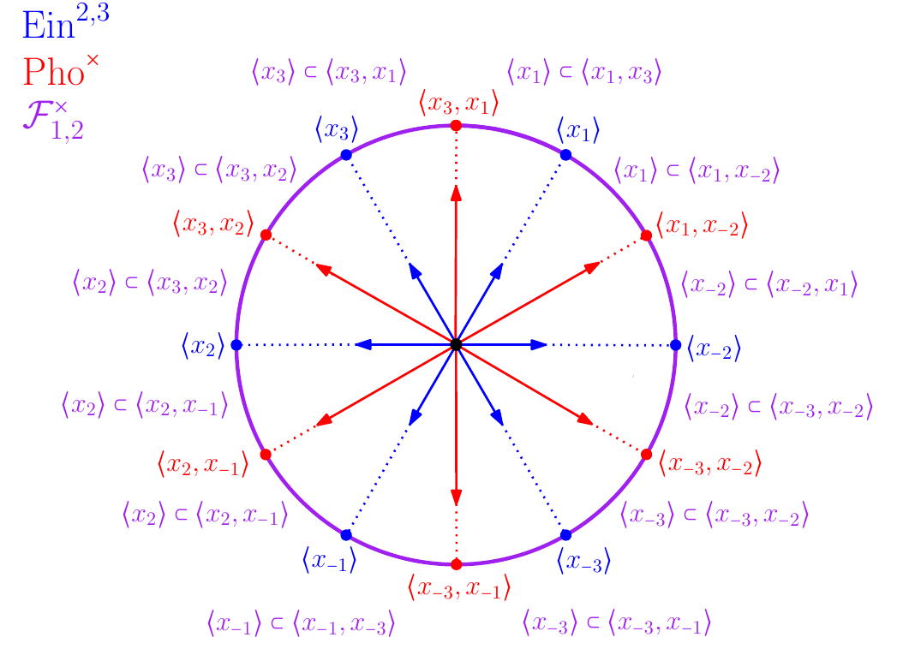
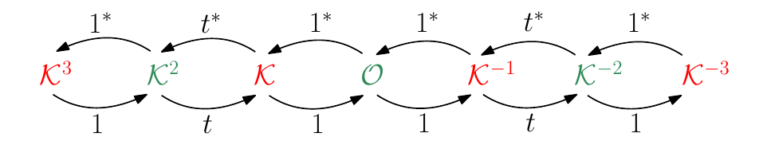
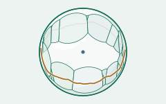
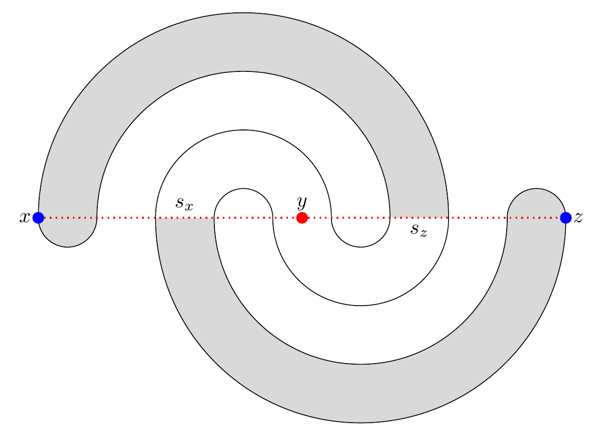
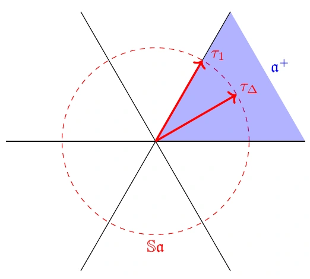
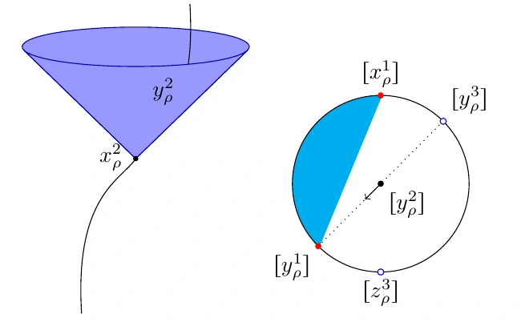

Detailed publication list
Preprints
-
Ideal Poisson–Voronoi tessellations for Finsler metrics on symmetric spaces
AbstractIdeal Poisson–Voronoi tessellations are random tessellations that arise as limits of Voronoi diagrams for Poisson point processes as their intensity tends to zero. For the Riemannian metric on a symmetric space of higher rank, Frączyk, Mellick, and Wilkens proved that the corresponding ideal Poisson–Voronoi tessellation is almost surely completely connected, with an unbounded side between any two cells. This contrasts sharply with the geometry of ideal Poisson–Voronoi tessellations in hyperbolic spaces studied by D’Achille, Curien, Enriquez, Lyons, and Ünel. In this paper we introduce and study ideal Poisson–Voronoi tessellations for Finsler metrics on higher rank symmetric spaces. We show that ideal Poisson–Voronoi tessellations with respect to polyhedral Finsler metrics can exhibit either behavior seen in these previous works: generically they resemble the hyperbolic case, where almost surely all cells have bounded sides. We further introduce the ideal Selberg–Poisson–Voronoi tessellation of the space of positive definite symmetric matrices, which has particularly nice properties.

$\mathsf{G}_2'$-Slodowy Slices I: Geometric Structures
AbstractLet $S$ be a closed surface of genus $g \geq 2$. We construct locally homogeneous geometric structures on closed 5-manifolds fibering over $S$, modeled on the two partial flag manifolds $\mathrm{Ein}^{2,3}$ and $\mathrm{Pho}^\times$ of the split real form $\mathrm{G}_2'$ of the complex exceptional Lie group $\mathrm{G}_2^{\mathbb{C}}$. To this end, we consider two families of representations $\pi _1S\rightarrow \mathrm{G}_2'$ constructed via the non-abelian Hodge correspondence from cyclic Higgs bundles, one associated with each $\mathrm{G}_2'$-partial flag manifold. Each family includes $\mathrm{G}_2'$-Hitchin representations, but is much more general. From the Higgs bundles of the first family, called $\beta $-bundles, we construct $(\mathrm{G}_2', \mathrm{Ein}^{2,3})$-geometric structures on $\mathrm{Ein}^{2,1}$-fiber bundles over $S$, and from Hodge bundles in the second family, called $\alpha $-bundles, we construct $(\mathrm{G}_2', \mathrm{Pho}^\times)$-geometric structures on $(\mathbb{RP}^2\times \mathbb{S}^1)$-bundles over $S$. In the case of $\mathrm{G}_2'$-Hitchin Hodge bundles, which belong to both families, we show the image of the developing map of the respective geometric structures is exactly the domain of discontinuity defined by Guichard-Wienhard and Kapovich-Leeb-Porti. Each construction can be interpreted as converting a family of equivariant $J$-holomorphic curves in the pseudosphere $\hat{\mathbb{S}}^{2,4}$ into geometric structures on fiber bundles $M \rightarrow S$. The approach used to build geometric structures, namely moving bases of pencils, gives a unified description of prior analytic geometric structures constructions using Higgs bundles and harmonic maps.

On Einstein Structures for $\mathrm{SO}_0(p,p+1)$-Surface Group Representations
AbstractLet $S$ be a closed surface of genus $g \geq 2$. We study the cocompact domain of discontinuity $\Omega _\rho $ in the Einstein universe $\mathrm{Ein}^{p-1,p}$ defined by Guichard-Wienhard and Kapovich-Leeb-Porti for a class of $p$-Anosov representations $\rho :\pi _1S \rightarrow \mathrm{SO}_0(p,p+1)$ including Hitchin representations, for $p \geq 3$. The quotient $M_\rho = \rho (\pi _1S)\backslash \Omega _\rho $ is abstractly known to be realizable as a fiber bundle over $S$, with unknown fiber of unique homotopy type $F_\rho $. We explicitly exhibit $M_\rho $ as a smooth $\mathfrak{F}_\rho $-fiber bundle over $S$, determining the diffeomorphism type of $M_\rho $ and the unique homotopy type $F_\rho $. Surprisingly, in many situations the fiber bundle $\mathfrak{F}_\rho \rightarrow M_\rho \rightarrow S$ is trivial.
-
Anosov deformations of Barbot representations
AbstractWe construct for each conformal structure on a closed orientable surface of genus at least 2 a proper slice in the character variety of representations of the associated surface group into $\mathrm{SL}(3,\mathbb{R})$ that belongs to the Barbot component and show that the corresponding representations are Borel Anosov. We describe a fibered geometric structure in the space of full flags associated with these representations.

Dirichlet domains for Anosov subgroups
AbstractWe introduce a sufficient condition for a finitely generated subgroup $\Gamma $ of a semisimple Lie group $G$ to admit finite-sided Dirichlet domains for polyhedral Finsler metrics on the symmetric space $G/K$. The condition always implies the $\Theta $-Anosov condition for some $\Theta $, and can be arranged to be equivalent to the $\Theta $-Anosov condition when $G$ is simple and $\Theta $ is the set of long roots or the set of short roots. The Dirichlet domain we obtain extends to a fundamental domain for the action of $\Gamma $ on a domain of discontinuity in a flag manifold. For instance, Borel Anosov subgroups of $\mathrm{SL}(d,\mathbb{R})$ have finite-sided Dirichlet domains for the Hilbert metric on the symmetric space which extends to the space of line-hyperplane flags, and $n$-Anosov subgroups of $\mathrm{Sp}(2n,\mathbb{R})$ have finite-sided Dirichlet-Selberg domains in $\mathrm{SL}(2n,\mathbb{R})/\mathrm{SO}(2n)$ which extend to a domain in projective space bounded by quadrics.


Published

Geometric structures for maximal representations and pencils
AbstractWe study fibrations of the projective model for the symmetric space associated with $\mathrm{SL}(2n,\mathbb{R})$ by codimension $2$ projective subspaces, or pencils of quadrics. In particular we show that if such a smooth fibration is equivariant with respect to a representation of a closed surface group, the representation is quasi-isometrically embedded, and even Anosov if the pencils in the image contain only non-degenerate quadrics. We use this to characterize maximal representations among representations of a closed surface group into $\mathrm{Sp}(2n,\mathbb{R})$ by the existence of an equivariant continuous fibration of the associated symmetric space, satisfying an additional technical property. These fibrations extend to fibrations of the projective structures associated to maximal representations by bases of pencils of quadrics.

Nearly geodesic immersions and domains of discontinuity
AbstractWe study nearly geodesic immersions in higher rank symmetric spaces of non-compact type, which we define as immersions that satisfy a bound on their fundamental form, generalizing the notion of immersions in hyperbolic space with principal curvature in $(-1,1)$. This notion depends on the choice of a flag manifold embedded in the visual boundary, and immersions satisfying this bound admit a natural domain in this flag manifold that comes with a fibration. As an application we give an explicit fibration of some domains of discontinuity for some Anosov representations. Our method can be applied in particular to some $\Theta $-positive representations for each notion of $\Theta $-positivity.

Maximal and Borel Anosov representations in $\mathrm{Sp}(4,\mathbb{R})$
AbstractWe prove that any Borel Anosov representations of a surface group into $\mathrm{Sp}(4,\mathbb{R})$ that has maximal Toledo invariant must be Hitchin. We also prove that a representation of a surface group into $\mathrm{Sp}(2n,\mathbb{R})$ that is $\{n-1,n\}$-Anosov is maximal if and only if it satisfies the hyperconvexity property $H_n$.
Projective Structures with (Quasi-)Hitchin Holonomy
AbstractIn this paper we investigate the properties of the real and complex projective structures associated to Hitchin and quasi-Hitchin representations that were originally constructed using Guichard-Wienhard's theory of domains of discontinuity. We determine the topology of the underlying manifolds and we prove that some of these geometric structures are fibered in a special standard way. In order to prove these results, we give two new ways to construct these geometric structures: we construct them using gauge theory, flat bundles and Higgs bundles, and we also give a new geometric way to construct them.